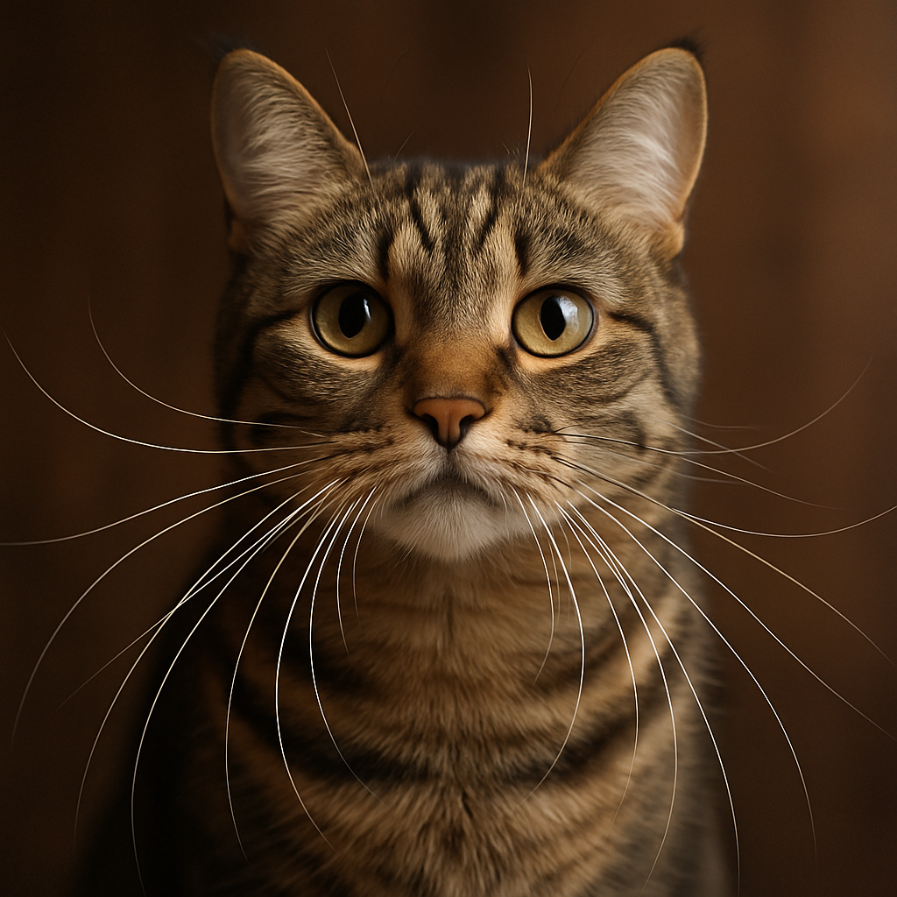

Os Bigodes dos Gatos São Superpoderes Disfarçados de Pelos

Sabe aqueles bigodes majestosos do seu gato? Eles não estão ali só para deixá-lo com cara de sábio filósofo. As vibrissas — o nome chique e científico dos bigodes — são, na verdade, um dos sistemas sensoriais mais sofisticados do reino animal. Se os gatos fossem super-heróis, os bigodes seriam definitivamente seu principal superpoder.
🧠 A ciência por trás da mágica
Cada vibrissa é três vezes mais grossa que um pelo comum e está ancorada em um folículo repleto de terminações nervosas e vasos sanguíneos — uma verdadeira estação sensorial em miniatura. A raiz de cada bigode fica em uma cápsula cheia de sangue chamada sinus sanguíneo, que amplifica até as menores vibrações. É como se cada bigode fosse uma antena ultra-sensível conectada diretamente ao cérebro felino.
Mas aqui está o detalhe fascinante: as vibrissas não apenas tocam as coisas. Elas detectam mudanças sutis nas correntes de ar! Quando seu gato passa por um espaço apertado, os bigodes captam como o ar se move ao redor dos objetos, criando um verdadeiro “mapa 3D” do ambiente. É GPS e radar em um único sistema biológico.
😺 Curiosidades que vão te fazer ver seu gato com outros olhos
Você já percebeu que os bigodes do seu gato têm quase exatamente a largura do corpo dele? Isso não é coincidência. Eles funcionam como uma régua natural para medir se o gato consegue passar por um buraco ou espaço estreito. Por isso, gatos obesos às vezes ficam presos — seus bigodes não “atualizaram” conforme o corpo cresceu!
E tem mais: gatos têm bigodes não só no focinho. Existem vibrissas acima dos olhos (supraciliares), nas bochechas, no queixo e até atrás das patas dianteiras! Essas últimas, chamadas vibrissas carpais, ajudam o gato a “sentir” a presa que está segurando — essencial para um caçador que precisa saber exatamente onde morder.
Outro detalhe incrível: os bigodes também são um termômetro emocional. Quando o gato está relaxado, ficam para os lados. Curioso ou caçando? Apontam para frente. Com medo? Recolhem-se contra o rosto. É linguagem corporal pura — e precisa.
🚫 Cuidados essenciais (ou: como não sabotar o GPS do seu gato)
Nunca, em hipótese alguma, corte os bigodes do seu gato. Isso não é uma questão estética — é uma questão de bem-estar. Um gato sem bigodes fica desorientado, ansioso e com dificuldade para calcular distâncias. É como tirar os óculos de alguém que não enxerga direito, só que pior.
Se encontrar um bigode caído no chão, relaxa — é normal! As vibrissas caem e crescem naturalmente, como qualquer outro pelo. O problema é a remoção proposital.
Também evite potes de comida e água muito estreitos. Quando os bigodes ficam pressionados contra as bordas, isso pode causar a chamada fadiga de bigodes — um desconforto real que pode fazer o gato evitar os potes. Prefira tigelas largas e rasas.
E se o seu gato for daqueles aventureiros que adoram explorar atrás do fogão ou em espaços apertados, fique de olho. Gatos idosos ou acima do peso podem ter dificuldade para avaliar espaços, já que suas vibrissas nem sempre acompanham as mudanças corporais.
🌍 O veredicto final
As vibrissas são um lembrete perfeito de que a evolução é uma artista brilhante. Em cada bigode há milhões de anos de adaptação, transformando simples pelos em instrumentos de precisão que fazem do gato um dos predadores mais eficientes do planeta.
Da próxima vez que seu gato passar raspando pelos seus móveis sem derrubar nada, você já sabe: é a tecnologia de ponta das vibrissas em ação.← Voltar para o blog